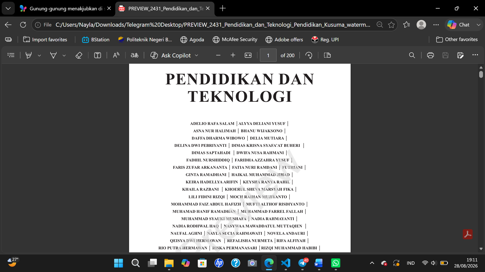
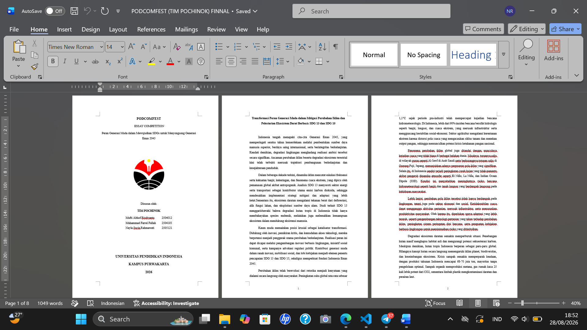
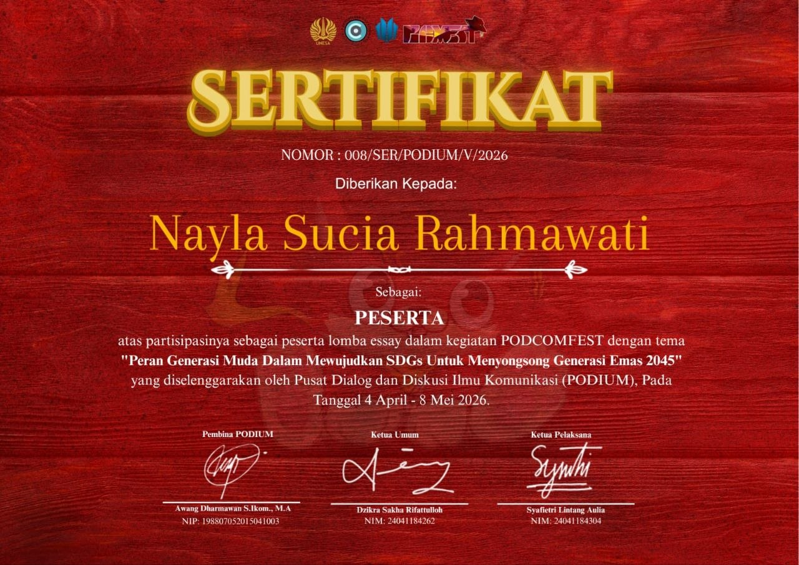

Berikut adalah beberapa project sederhana yang pernah atau saya kerjakan.

Buku yang berisi kumpulan artikel setiap kelompok Kelas 1A pada mata kuliah Pendidikan Bahasa Indonesia untuk memenuhi tugas UAS


Menulis esai mengenai peran strategis generasi muda dalam mendukung pencapaian SDG 13 dan SDG 15 melalui inovasi berbasis lingkungan, aksi sosial, gaya hidup berkelanjutan, serta advokasi kebijakan. Artikel ini juga membahas tantangan perubahan iklim dan degradasi ekosistem di Indonesia serta solusi kolaboratif untuk mendukung terwujudnya Indonesia Emas 2045.
Game yang dibuat untuk memenuhi project UAS mata kuliah Analisis Perancangan dan Sistem Informasi
| Ringkasan Portofolio Project | |||
|---|---|---|---|
| No. | Project | Detail Project | |
| Teknologi | Status | ||
| 1 | Buku "Pendidikan dan Teknologi" | Word, Google Scholar, AI | Selesai |
| 2 | Essai Lomba | Word, Google Scholar | |
| 3 | Game Digital Wayang | Python, VsCode, RenPy, GitHub | |
Tertarik berdiskusi?Hubungi saya
© 2026 Nayla Sucia Rahmawati. Dibuat menggunakan HTML